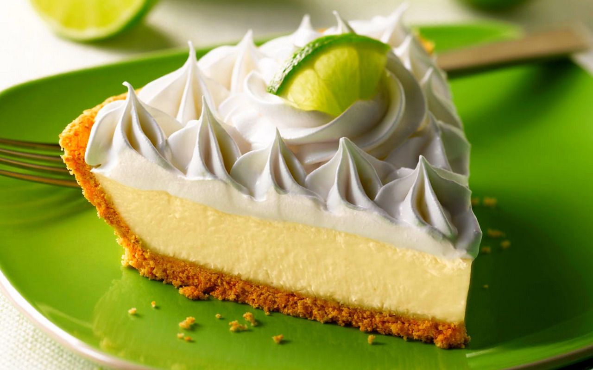

Phoenician's Key Lime Pie

Description
I hope you all enjoy this Key lime pie. When I moved from Lebanon to Florida in the spring of 1999,
the famous Key lime pie was new to me. It was a friend's favorite dessert so I kept playing with the recipe to get that wow flavor. I now live in North Bay, Ontario, where we only get Key limes twice a year,
so sometimes I substitute them with fresh lime juice.
Ingredients
Crust:
- ⅔ cup toasted slivered almonds
- 1 cup graham cracker crumbs
- ¼ cup white sugar
- 1 pinch salt
- ¼ cup butter, melted
Key Lime Filling
- 1 (14 ounce) can sweetened condensed milk
- ¾ cup cold heavy cream
- 4 large egg yolks
- ½ teaspoon grated lime zest
- ½ cup Key lime juice
Steps
- Preheat the oven to 350 degrees F (175 degrees C).
- To make the crust: Pulse almonds in a food processor until finely ground, then pour into a medium bowl. Add graham cracker crumbs, sugar, and salt. Pour in melted butter and mix until evenly moistened. Press into a 9-inch pie plate.
- Bake in the preheated oven until crust is golden brown, 10 to 13 minutes.
- While crust is baking, make the filling: Beat condensed milk, cream, egg yolks, and lime zest in a large bowl until well combined. Whisk in lime juice, a little at a time, to thicken custard. Pour custard into pie crust.
- Bake until custard is set, about 15 minutes. Cool to room temperature on a wire rack, then cover loosely with plastic wrap and chill in the refrigerator for 8 hours to overnight.